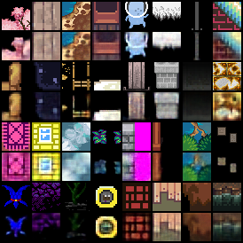

Deep-Compression Auto-Encoder
Experiments with a small version of DC-AE from the paper DEEP COMPRESSION AUTOENCODER FOR EFFICIENT HIGH-RESOLUTION DIFFUSION MODELS arxiv.org/abs/2205.14756
Code can be found here https://github.com/mit-han-lab/efficientvit, and i copied the DC-AE parts and ported the type-hints back to python <3.10 here.
Using the good ol' 47,579 RPG dataset, for one million 3x32x32 images.

(Not all runs are finished because they seemed to converge at the same validation error)
The baseline (gray) is the usual stacked symmetric CNN AE with 24, 32, 48 channels, kernel-size 5 and a linear layer for latent code size of 128, which results in a compression ratio of 24.
The DC-AE model configurations i tried are:
dcae-03 (yellow) params: 81M, ratio 96
"latent_channels=32 "
"encoder.block_type=[ResBlock,ResBlock,ResBlock,EViT_GLU,EViT_GLU,EViT_GLU] "
"encoder.width_list=[64,128,256,256,512,512] encoder.depth_list=[0,4,8,2,2,2] "
"decoder.block_type=[ResBlock,ResBlock,ResBlock,EViT_GLU,EViT_GLU,EViT_GLU] "
"decoder.width_list=[64,128,256,256,512,512] decoder.depth_list=[0,5,10,2,2,2] "
"decoder.norm=[bn2d,bn2d,bn2d,trms2d,trms2d,trms2d] decoder.act=[relu,relu,relu,silu,silu,silu]"
dcae-04 (purple) params: 81M, ratio 48
lowered compression ratio (via latent_channels)
"latent_channels=64 "
"encoder.block_type=[ResBlock,ResBlock,ResBlock,EViT_GLU,EViT_GLU,EViT_GLU] "
"encoder.width_list=[64,128,256,256,512,512] encoder.depth_list=[0,4,8,2,2,2] "
"decoder.block_type=[ResBlock,ResBlock,ResBlock,EViT_GLU,EViT_GLU,EViT_GLU] "
"decoder.width_list=[64,128,256,256,512,512] decoder.depth_list=[0,5,10,2,2,2] "
"decoder.norm=[bn2d,bn2d,bn2d,trms2d,trms2d,trms2d] decoder.act=[relu,relu,relu,silu,silu,silu]"
dcae-05 (green) params: 110M, ratio: 48
increased width
"latent_channels=64 "
"encoder.block_type=[ResBlock,ResBlock,ResBlock,EViT_GLU,EViT_GLU,EViT_GLU] "
"encoder.width_list=[128,256,256,512,512,512] encoder.depth_list=[0,4,8,2,2,2] "
"decoder.block_type=[ResBlock,ResBlock,ResBlock,EViT_GLU,EViT_GLU,EViT_GLU] "
"decoder.width_list=[128,256,256,512,512,512] decoder.depth_list=[0,5,10,2,2,2] "
"decoder.norm=[bn2d,bn2d,bn2d,trms2d,trms2d,trms2d] decoder.act=[relu,relu,relu,silu,silu,silu]"
dcae-06 (orange): params: 142M, ratio: 48
increased width
"latent_channels=64 "
"encoder.block_type=[ResBlock,ResBlock,ResBlock,EViT_GLU,EViT_GLU,EViT_GLU] "
"encoder.width_list=[64,128,256,256,512,1024] encoder.depth_list=[0,4,8,2,2,2] "
"decoder.block_type=[ResBlock,ResBlock,ResBlock,EViT_GLU,EViT_GLU,EViT_GLU] "
"decoder.width_list=[64,128,256,256,512,1024] decoder.depth_list=[0,5,10,2,2,2] "
"decoder.norm=[bn2d,bn2d,bn2d,trms2d,trms2d,trms2d] decoder.act=[relu,relu,relu,silu,silu,silu]"
dcae-07 (pink): params: 106M, ratio: 48
Sames as dcae-04 but increased depth.
"latent_channels=64 "
"encoder.block_type=[ResBlock,ResBlock,ResBlock,EViT_GLU,EViT_GLU,EViT_GLU] "
"encoder.width_list=[64,128,256,256,512,512] encoder.depth_list=[0,4,8,2,3,4] "
"decoder.block_type=[ResBlock,ResBlock,ResBlock,EViT_GLU,EViT_GLU,EViT_GLU] "
"decoder.width_list=[64,128,256,256,512,512] decoder.depth_list=[0,5,10,2,3,4] "
"decoder.norm=[bn2d,bn2d,bn2d,trms2d,trms2d,trms2d] decoder.act=[relu,relu,relu,silu,silu,silu]"
The original model in the repo has 323M parameters which i could not train on my GPU,
so i lowered the width of the layers to make it fit. Also increased the learning rate from
originally 9.375e-7 to 9.375e-5. Batch size was 64.
The latent shape for 32x32 images is actually [<latent_channels>, 1, 1]. The first try with
compression ratio 96 was a bit too much. With ratio 48 the results are better than the baseline (with 24)
so this is promising. However, none of the changes (dcae-05 to dcae-07) did enhance the performance.
Here's the reconstruction of the validation set for baseline and dcae-05:
| baseline | dcae-05 |
|---|---|
 |
 |